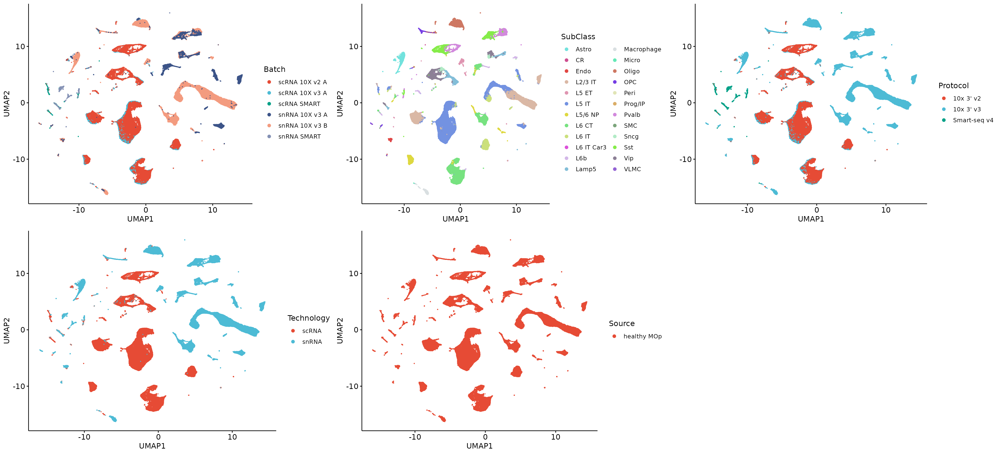
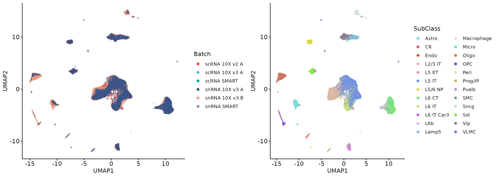
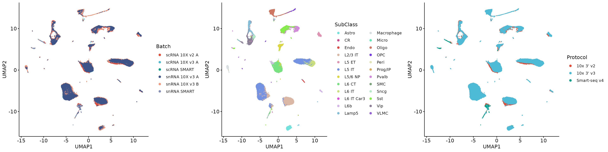
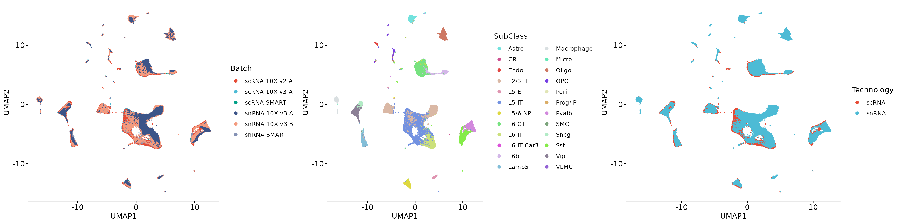
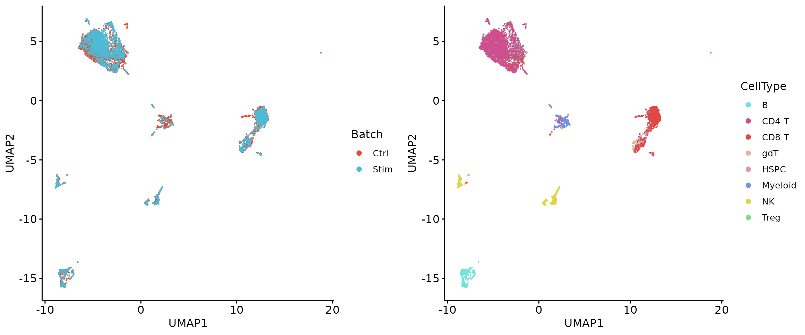

Group technical effects calculation and highly batch-sensitive genes (HBGs) selection
Yang Zhou
2024-06-06
Source:vignettes/GTE_usage.Rmd
GTE_usage.Rmd0. Introduction
GTE (Group Technique Effects) quantifies batch effects for individual genes in single-cell data. Then, we can select those genes that dominate the batch effects in the dataset, called highly batch-sensitive genes (HBGs), with remaining genes called non-highly batch-sensitive genes (non-HBGs). In this vignette, we demonstrate on a single-cell RNA sequencing (scRNA-seq) dataset (mouse cortex) and a single-cell proteomics dataset (human PBMCs (CITE-seq)) how to estimate and remove batch effects in a dataset using GTE.
1. Application of GTE on scRNA-seq data
1.1 Load data matrix and metadata
## Formal class 'dgCMatrix' [package "Matrix"] with 6 slots
## ..@ i : int [1:1803043092] 1 2 3 5 7 8 10 14 16 17 ...
## ..@ p : int [1:406188] 0 7848 15587 22687 30777 40679 49245 57444 65947 70841 ...
## ..@ Dim : int [1:2] 19942 406187
## ..@ Dimnames:List of 2
## .. ..$ : chr [1:19942] "Defb25" "Ankrd9" "Fdx2" "Timm23" ...
## .. ..$ : chr [1:406187] "scRNA SMART.SM-D9D8O_S03_E1-50" "scRNA SMART.SM-DAIH5_S47_E1-50" "scRNA SMART.SM-DD44L_S43_E1-50" "scRNA SMART.SM-D9E5O_S40_E1-50" ...
## ..@ x : num [1:1803043092] 0.509 0.276 0.372 0.649 1.569 ...
## ..@ factors : list()
meta = readRDS("/home/server/zy/group_scripts/datasets_preparation/mouse_cortex/Meta.rds")
str(meta)## 'data.frame': 406187 obs. of 4 variables:
## $ Batch : chr "scRNA SMART" "scRNA SMART" "scRNA SMART" "scRNA SMART" ...
## $ SubClass : chr "L6 CT" "L6 CT" "Lamp5" "L6 CT" ...
## $ Protocol : chr "Smart-seq v4" "Smart-seq v4" "Smart-seq v4" "Smart-seq v4" ...
## $ Technology: chr "scRNA" "scRNA" "scRNA" "scRNA" ...
# The highly variable genes (HVGs) are already calculated.
hvgs = readRDS("/home/server/zy/group_scripts/datasets_preparation/mouse_cortex/vargs.rds")
length(hvgs)## [1] 4000The data has multiple group variables available, which we will use
separately for the GTE calculation. We also add a source
group variable, to indicate that the data is biologically
homogeneous.
meta$Source = "healthy MOp"1.2 Visualization of raw data
Colors = distinctColorPalette(24)
pca_res = irlba(t(X[hvgs, ]), nv = 50)
raw_emb = as.matrix(pca_res$u %*% diag(pca_res$d))
raw_umap = as.data.frame(umap(raw_emb))
colnames(raw_umap) = c("UMAP1", "UMAP2")
raw_umap = cbind.data.frame(meta, raw_umap)
p1 = ggscatter(raw_umap, x = "UMAP1", y = "UMAP2", size = 0.1, color = "Batch", palette = "npg", legend = "right") +
guides(colour = guide_legend(override.aes = list(size = 2)))
p2 = ggscatter(raw_umap, x = "UMAP1", y = "UMAP2", size = 0.1, color = "SubClass", palette = Colors, legend = "right") +
guides(colour = guide_legend(override.aes = list(size = 2)))
p3 = ggscatter(raw_umap, x = "UMAP1", y = "UMAP2", size = 0.1, color = "Protocol", palette = "npg", legend = "right") +
guides(colour = guide_legend(override.aes = list(size = 2)))
p4 = ggscatter(raw_umap, x = "UMAP1", y = "UMAP2", size = 0.1, color = "Technology", palette = "npg", legend = "right") +
guides(colour = guide_legend(override.aes = list(size = 2)))
p5 = ggscatter(raw_umap, x = "UMAP1", y = "UMAP2", size = 0.1, color = "Source", palette = "npg", legend = "right") +
guides(colour = guide_legend(override.aes = list(size = 2)))
plot_grid(p1, p2, p3, p4, p5, align = 'h', axis = "b", nrow = 2)
We can observe strong batch effects in the dataset.
1.3 GTE calculation and HBGs selection
1.3.1 Cell type group variable
We calculate the GTE using cell type group variable. For the data matrix with many features, we can divide multiple feature subsets for calculation, which is consistent with the result of direct calculation, but more memory saving.
gene_list <- split(rownames(X), ceiling(1:nrow(X) / 2000))
GTE_ct0 = lapply(gene_list, function(x) Run.GroupTechEffects(X[x, ], meta, g_factor = "SubClass", b_factor = "Batch"))## Compute the group technical effects!## Done!## Compute the group technical effects!## Done!## Compute the group technical effects!## Done!## Compute the group technical effects!## Done!## Compute the group technical effects!## Done!## Compute the group technical effects!## Done!## Compute the group technical effects!## Done!## Compute the group technical effects!## Done!## Compute the group technical effects!## Done!## Compute the group technical effects!## Done!
GTE_ct = list()
GTE_ct$GroupTechEffects = Reduce(rbind, lapply(GTE_ct0, function(x) x$GroupTechEffects))
GTE_ct$OverallTechEffects = Reduce('c', lapply(GTE_ct0, function(x) x$OverallTechEffects))
str(GTE_ct)## List of 2
## $ GroupTechEffects : num [1:19942, 1:24] 7.07e-12 6.79e-06 4.46e-07 4.46e-05 0.00 ...
## ..- attr(*, "dimnames")=List of 2
## .. ..$ : chr [1:19942] "Defb25" "Ankrd9" "Fdx2" "Timm23" ...
## .. ..$ : chr [1:24] "Astro" "CR" "Endo" "L2/3 IT" ...
## $ OverallTechEffects: Named num [1:19942] 7.59e-09 6.24e-04 3.27e-04 4.71e-03 2.06e-09 ...
## ..- attr(*, "names")= chr [1:19942] "Defb25" "Ankrd9" "Fdx2" "Timm23" ...The results contain GTE vectors for each cell type and GTE vector for the entire dataset. The latter is the sum of the former. We only use the latter for further analysis here, for the former the readers can get further details from our paper.
Let’s look at the overall picture of GTE in terms of HVGs and all the genes.
plot_overall <- function(gte, genes) {
gte = sort(gte[genes], decreasing = F)
quantile_nums <- findInterval(quantile(gte, probs = seq(0, 0.9, 0.1)), gte)
cum_gte = rev(cumsum(rev(unname(gte))))
df = data.frame(GTE = rev(cum_gte[quantile_nums]),
Percentage = c('10', '20', '30', '40', '50', '60', '70', '80', '90', '100'))
ggbarplot(df, x = "Percentage", y = "GTE",
legend = "none", fill = "gray", color = "gray",
font.label = list(size = 8, face = "plain"), width = 0.7, alpha = 1,
label = round(df$GTE, 1), lab.size = 3, lab.col = "black", lab.pos = "out") +
labs(x = "Top GTE genes (%)", y = "Total GTE")
}
q1 = plot_overall(GTE_ct$OverallTechEffects, rownames(X)) + labs(title = "Cumulative GTE of all genes")
q2 = plot_overall(GTE_ct$OverallTechEffects, hvgs) + labs(title = "Cumulative GTE of HVGs")
plot_grid(q1, q2, align = 'h', axis = "b")
We can see that whether in HVGs or in all genes, some genes dominate
the overall GTE, and we call these genes highly batch-sensitive genes
(HBGs). We can use the Select.HBGs or function to select
those HBGs.
GTE_ct_hvgs = GTE_ct
GTE_ct_hvgs$GroupTechEffects = GTE_ct_hvgs$GroupTechEffects[hvgs, ]
GTE_ct_hvgs$OverallTechEffects = GTE_ct_hvgs$OverallTechEffects[hvgs]
HBGs_hvgs = Select.HBGs(GTE_ct_hvgs)## Find 1600 HBGs, GTE proportion: 0.978566476447474
head(HBGs_hvgs)## [1] "mt-Cytb" "mt-Nd3" "Camk2n1" "Kcnip4" "Pcp4" "Ftl1"
HBGs_allgenes = Select.HBGs(GTE_ct)## Find 7977 HBGs, GTE proportion: 0.97975022690868
head(HBGs_allgenes)## [1] "mt-Atp6" "mt-Co3" "mt-Co2" "mt-Nd1" "mt-Cytb" "mt-Co1"Let’s see what happens when we remove these HBGs.
nonHBGs_hvgs = hvgs[!hvgs %in% HBGs_hvgs]
pca_res = irlba(t(X[nonHBGs_hvgs, ]), nv = 50)
nonhbgs_hvgs_emb = as.matrix(pca_res$u %*% diag(pca_res$d))
nonhbgs_hvgs_umap = as.data.frame(umap(nonhbgs_hvgs_emb))
colnames(nonhbgs_hvgs_umap) = c("UMAP1", "UMAP2")
nonhbgs_hvgs_umap = cbind.data.frame(meta, nonhbgs_hvgs_umap)
q1 = ggscatter(nonhbgs_hvgs_umap, x = "UMAP1", y = "UMAP2", size = 0.1, color = "Batch", palette = "npg", legend = "right") +
guides(colour = guide_legend(override.aes = list(size = 2)))
q2 = ggscatter(nonhbgs_hvgs_umap, x = "UMAP1", y = "UMAP2", size = 0.1, color = "SubClass", palette = Colors, legend = "right") +
guides(colour = guide_legend(override.aes = list(size = 2)))
plot_grid(q1, q2, align = 'h', axis = "b")
nonHBGs_allgenes = rownames(X)[!rownames(X) %in% HBGs_allgenes]
pca_res = irlba(t(X[nonHBGs_allgenes, ]), nv = 50)
nonhbgs_allgenes_emb = as.matrix(pca_res$u %*% diag(pca_res$d))
nonhbgs_allgenes_umap = as.data.frame(umap(nonhbgs_allgenes_emb))
colnames(nonhbgs_allgenes_umap) = c("UMAP1", "UMAP2")
nonhbgs_allgenes_umap = cbind.data.frame(meta, nonhbgs_allgenes_umap)
q3 = ggscatter(nonhbgs_allgenes_umap, x = "UMAP1", y = "UMAP2", size = 0.1, color = "Batch", palette = "npg", legend = "right") +
guides(colour = guide_legend(override.aes = list(size = 2)))
q4 = ggscatter(nonhbgs_allgenes_umap, x = "UMAP1", y = "UMAP2", size = 0.1, color = "SubClass", palette = Colors, legend = "right") +
guides(colour = guide_legend(override.aes = list(size = 2)))
plot_grid(q3, q4, align = 'h', axis = "b")Removing HBGs from HVGs effectively removed the batch effects, while PCA result on all genes still showed strong batch effects. This is because the total GTE of the remaining genes is still large. Further selection across all genes and removal of more HBGs do not improve the results. In our paper, we show that removing too many genes from the all genes in the scRNA-seq data results in insufficient variability in the data to indicate cellular identity. Therefore, for scRNA-seq data, we recommend that HBGs be calculated on HVGs and removed.
1.3.2 Protocol group variable
GTE_tech = Run.GroupTechEffects(X[hvgs, ], meta, g_factor = "Protocol", b_factor = "Batch")## Compute the group technical effects!## Done!
str(GTE_tech)## List of 2
## $ GroupTechEffects : num [1:4000, 1:3] 0 0 0 0 0 0 0 0 0 0 ...
## ..- attr(*, "dimnames")=List of 2
## .. ..$ : chr [1:4000] "Spsb1" "Ddi1" "Arl15" "Man1a" ...
## .. ..$ : chr [1:3] "10x 3' v2" "10x 3' v3" "Smart-seq v4"
## $ OverallTechEffects: Named num [1:4000] 7.08e-04 1.93e-06 1.57e-02 1.06e-03 4.58e-05 ...
## ..- attr(*, "names")= chr [1:4000] "Spsb1" "Ddi1" "Arl15" "Man1a" ...
HBGs_hvgs = Select.HBGs(GTE_tech)## Find 1200 HBGs, GTE proportion: 0.978190489960098
head(HBGs_hvgs)## [1] "mt-Cytb" "Snhg11" "Camk2n1" "Stmn1" "Snca" "Nrgn"
nonHBGs_hvgs = hvgs[!hvgs %in% HBGs_hvgs]
pca_res = irlba(t(X[nonHBGs_hvgs, ]), nv = 50)
nonhbgs_hvgs_emb = as.matrix(pca_res$u %*% diag(pca_res$d))
nonhbgs_hvgs_umap = as.data.frame(umap(nonhbgs_hvgs_emb))
colnames(nonhbgs_hvgs_umap) = c("UMAP1", "UMAP2")
nonhbgs_hvgs_umap = cbind.data.frame(meta, nonhbgs_hvgs_umap)
q5 = ggscatter(nonhbgs_hvgs_umap, x = "UMAP1", y = "UMAP2", size = 0.1, color = "Batch", palette = "npg", legend = "right") +
guides(colour = guide_legend(override.aes = list(size = 2)))
q6 = ggscatter(nonhbgs_hvgs_umap, x = "UMAP1", y = "UMAP2", size = 0.1, color = "SubClass", palette = Colors, legend = "right") +
guides(colour = guide_legend(override.aes = list(size = 2)))
q7 = ggscatter(nonhbgs_hvgs_umap, x = "UMAP1", y = "UMAP2", size = 0.1, color = "Protocol", palette = "npg", legend = "right") +
guides(colour = guide_legend(override.aes = list(size = 2)))
plot_grid(q5, q6, q7, align = 'h', axis = "b", nrow = 1)
1.3.3 Technology group variable
GTE_tech = Run.GroupTechEffects(X[hvgs, ], meta, g_factor = "Technology", b_factor = "Batch")## Compute the group technical effects!## Done!
str(GTE_tech)## List of 2
## $ GroupTechEffects : num [1:4000, 1:2] 1.32e-05 2.11e-11 1.17e-02 1.43e-03 9.17e-07 ...
## ..- attr(*, "dimnames")=List of 2
## .. ..$ : chr [1:4000] "Spsb1" "Ddi1" "Arl15" "Man1a" ...
## .. ..$ : chr [1:2] "scRNA" "snRNA"
## $ OverallTechEffects: Named num [1:4000] 7.82e-04 1.38e-06 4.04e-02 3.29e-03 3.77e-05 ...
## ..- attr(*, "names")= chr [1:4000] "Spsb1" "Ddi1" "Arl15" "Man1a" ...
HBGs_hvgs = Select.HBGs(GTE_tech)## Find 1200 HBGs, GTE proportion: 0.981037995176774
head(HBGs_hvgs)## [1] "Kcnip4" "Nrxn3" "Snhg11" "Ptprd" "Fam155a" "Cntnap2"
nonHBGs_hvgs = hvgs[!hvgs %in% HBGs_hvgs]
pca_res = irlba(t(X[nonHBGs_hvgs, ]), nv = 50)
nonhbgs_hvgs_emb = as.matrix(pca_res$u %*% diag(pca_res$d))
nonhbgs_hvgs_umap = as.data.frame(umap(nonhbgs_hvgs_emb))
colnames(nonhbgs_hvgs_umap) = c("UMAP1", "UMAP2")
nonhbgs_hvgs_umap = cbind.data.frame(meta, nonhbgs_hvgs_umap)
q5 = ggscatter(nonhbgs_hvgs_umap, x = "UMAP1", y = "UMAP2", size = 0.1, color = "Batch", palette = "npg", legend = "right") +
guides(colour = guide_legend(override.aes = list(size = 2)))
q6 = ggscatter(nonhbgs_hvgs_umap, x = "UMAP1", y = "UMAP2", size = 0.1, color = "SubClass", palette = Colors, legend = "right") +
guides(colour = guide_legend(override.aes = list(size = 2)))
q7 = ggscatter(nonhbgs_hvgs_umap, x = "UMAP1", y = "UMAP2", size = 0.1, color = "Technology", palette = "npg", legend = "right") +
guides(colour = guide_legend(override.aes = list(size = 2)))
plot_grid(q5, q6, q7, align = 'h', axis = "b", nrow = 1)
1.3.4 Source group variable
GTE_source = Run.GroupTechEffects(X[hvgs, ], meta, g_factor = "Source", b_factor = "Batch")## Compute the group technical effects!## Done!
str(GTE_source)## List of 2
## $ GroupTechEffects : num [1:4000, 1] 8.14e-04 3.82e-06 5.41e-02 4.02e-03 8.06e-05 ...
## ..- attr(*, "dimnames")=List of 2
## .. ..$ : chr [1:4000] "Spsb1" "Ddi1" "Arl15" "Man1a" ...
## .. ..$ : chr "healthy MOp"
## $ OverallTechEffects: Named num [1:4000] 8.14e-04 3.82e-06 5.41e-02 4.02e-03 8.06e-05 ...
## ..- attr(*, "names")= chr [1:4000] "Spsb1" "Ddi1" "Arl15" "Man1a" ...
HBGs_hvgs = Select.HBGs(GTE_source)## Find 1200 HBGs, GTE proportion: 0.976603344341924
head(HBGs_hvgs)## [1] "mt-Cytb" "Camk2n1" "Nrsn1" "Pgm2l1" "Pcp4" "mt-Nd3"
nonHBGs_hvgs = hvgs[!hvgs %in% HBGs_hvgs]
pca_res = irlba(t(X[nonHBGs_hvgs, ]), nv = 50)
nonhbgs_hvgs_emb = as.matrix(pca_res$u %*% diag(pca_res$d))
nonhbgs_hvgs_umap = as.data.frame(umap(nonhbgs_hvgs_emb))
colnames(nonhbgs_hvgs_umap) = c("UMAP1", "UMAP2")
nonhbgs_hvgs_umap = cbind.data.frame(meta, nonhbgs_hvgs_umap)
q9 = ggscatter(nonhbgs_hvgs_umap, x = "UMAP1", y = "UMAP2", size = 0.1, color = "Batch", palette = "npg", legend = "right") +
guides(colour = guide_legend(override.aes = list(size = 2)))
q10 = ggscatter(nonhbgs_hvgs_umap, x = "UMAP1", y = "UMAP2", size = 0.1, color = "SubClass", palette = Colors, legend = "right") +
guides(colour = guide_legend(override.aes = list(size = 2)))
q11 = ggscatter(nonhbgs_hvgs_umap, x = "UMAP1", y = "UMAP2", size = 0.1, color = "Source", palette = "npg", legend = "right") +
guides(colour = guide_legend(override.aes = list(size = 2)))
plot_grid(q9, q10, q11, align = 'h', axis = "b", nrow = 1)1.4 Random gene removal
We show that random gene removal cannot remove the batch effects.
sample_genes = sort(sample(1:4000, 2400))
pca_res = irlba(t(X[hvgs[-sample_genes], ]), nv = 50)
subset_emb = as.matrix(pca_res$u %*% diag(pca_res$d))
subset_umap = as.data.frame(umap(subset_emb))## Spectral initialization failed to converge, using random initialization instead
colnames(subset_umap) = c("UMAP1", "UMAP2")
subset_umap = cbind.data.frame(meta, subset_umap)
r1 = ggscatter(subset_umap, x = "UMAP1", y = "UMAP2", size = 0.1, color = "Batch", palette = "npg", legend = "right") +
guides(colour = guide_legend(override.aes = list(size = 2)))
r2 = ggscatter(subset_umap, x = "UMAP1", y = "UMAP2", size = 0.1, color = "SubClass", palette = Colors, legend = "right") +
guides(colour = guide_legend(override.aes = list(size = 2)))
plot_grid(r1, r2, align = 'h', axis = "b")2. Application of GTE on single-cell proteomics data
2.1 Load data matrix and metadata
We show that highly batch-sensitive features are applicable even for single-cell data with few features.
## num [1:223, 1:8715] 0.238 0 0.238 0.43 0 ...
## - attr(*, "dimnames")=List of 2
## ..$ : chr [1:223] "cd80" "cd86" "cd274" "cd273" ...
## ..$ : chr [1:8715] "AAACCCAAGACAAGCC-1_ctrl" "AAACCCAGTCGACTTA-1_ctrl" "AAACCCAGTCGGCACT-1_ctrl" "AAACCCAGTTGCAAGG-1_ctrl" ...
meta = readRDS(paste0("/home/server/zy/group_scripts/datasets_preparation/PBMCs_CITE/meta.rds"))
meta$Source = "homologous"
str(meta)## 'data.frame': 8715 obs. of 3 variables:
## $ Batch : chr "Ctrl" "Ctrl" "Ctrl" "Ctrl" ...
## $ CellType: chr "NK" "CD4 T" "CD4 T" "CD4 T" ...
## $ Source : chr "homologous" "homologous" "homologous" "homologous" ...2.2 Visualization of raw data
pca_res = irlba(t(X), nv = 30)
raw_emb = as.matrix(pca_res$u %*% diag(pca_res$d))
raw_umap = as.data.frame(umap(raw_emb))
colnames(raw_umap) = c("UMAP1", "UMAP2")
raw_umap = cbind.data.frame(meta, raw_umap)
p1 = ggscatter(raw_umap, x = "UMAP1", y = "UMAP2", size = 0.1, color = "Batch", palette = "npg", legend = "right") +
guides(colour = guide_legend(override.aes = list(size = 2)))
p2 = ggscatter(raw_umap, x = "UMAP1", y = "UMAP2", size = 0.1, color = "CellType", palette = Colors, legend = "right") +
guides(colour = guide_legend(override.aes = list(size = 2)))
plot_grid(p1, p2, align = 'h', axis = "b", nrow = 1)2.3 GTE calculation and highly batch-sensitive proteins selection
2.3.1 Cell type group variable
GTE_ct = Run.GroupTechEffects(X, meta, g_factor = "CellType", b_factor = "Batch")## Compute the group technical effects!## Done!
str(GTE_ct)## List of 2
## $ GroupTechEffects : num [1:223, 1:8] 1.14e-03 1.93e-02 8.66e-03 9.09e-08 6.29e-05 ...
## ..- attr(*, "dimnames")=List of 2
## .. ..$ : chr [1:223] "cd80" "cd86" "cd274" "cd273" ...
## .. ..$ : chr [1:8] "B" "CD4 T" "CD8 T" "gdT" ...
## $ OverallTechEffects: Named num [1:223] 0.001613 0.021991 0.217141 0.001988 0.000293 ...
## ..- attr(*, "names")= chr [1:223] "cd80" "cd86" "cd274" "cd273" ...
HBPs = Select.HBGs(GTE_ct)## Find 89 HBGs, GTE proportion: 0.977311277449056
head(HBPs)## [1] "cd69" "cd3.2" "cd3.1" "cd25" "cd71" "cd28"
LTPs = rownames(X)[!rownames(X) %in% HBPs]
pca_res = irlba(t(X[LTPs, ]), nv = 30)
ltps_emb = as.matrix(pca_res$u %*% diag(pca_res$d))
ltps_umap = as.data.frame(umap(ltps_emb))
colnames(ltps_umap) = c("UMAP1", "UMAP2")
ltps_umap = cbind.data.frame(meta, ltps_umap)
q1 = ggscatter(ltps_umap, x = "UMAP1", y = "UMAP2", size = 0.1, color = "Batch", palette = "npg", legend = "right") +
guides(colour = guide_legend(override.aes = list(size = 2)))
q2 = ggscatter(ltps_umap, x = "UMAP1", y = "UMAP2", size = 0.1, color = "CellType", palette = Colors, legend = "right") +
guides(colour = guide_legend(override.aes = list(size = 2)))
plot_grid(q1, q2, align = 'h', axis = "b", nrow = 1)
2.3.2 Source group variable
GTE_source = Run.GroupTechEffects(X, meta, g_factor = "Source", b_factor = "Batch")## Compute the group technical effects!## Done!
str(GTE_source)## List of 2
## $ GroupTechEffects : num [1:223, 1] 1.57e-04 2.80e-05 1.22e-01 1.18e-07 5.85e-05 ...
## ..- attr(*, "dimnames")=List of 2
## .. ..$ : chr [1:223] "cd80" "cd86" "cd274" "cd273" ...
## .. ..$ : chr "homologous"
## $ OverallTechEffects: Named num [1:223] 1.57e-04 2.80e-05 1.22e-01 1.18e-07 5.85e-05 ...
## ..- attr(*, "names")= chr [1:223] "cd80" "cd86" "cd274" "cd273" ...
HBPs = Select.HBGs(GTE_source)## Find 45 HBGs, GTE proportion: 0.981333552938349
head(HBPs)## [1] "cd69" "cd3.2" "cd3.1" "cd71" "cd25" "cd28"
LTPs = rownames(X)[!rownames(X) %in% HBPs]
pca_res = irlba(t(X[LTPs, ]), nv = 30)
ltps_emb = as.matrix(pca_res$u %*% diag(pca_res$d))
ltps_umap = as.data.frame(umap(ltps_emb))
colnames(ltps_umap) = c("UMAP1", "UMAP2")
ltps_umap = cbind.data.frame(meta, ltps_umap)
q3 = ggscatter(ltps_umap, x = "UMAP1", y = "UMAP2", size = 0.1, color = "Batch", palette = "npg", legend = "right") +
guides(colour = guide_legend(override.aes = list(size = 2)))
q4 = ggscatter(ltps_umap, x = "UMAP1", y = "UMAP2", size = 0.1, color = "CellType", palette = Colors, legend = "right") +
guides(colour = guide_legend(override.aes = list(size = 2)))
plot_grid(q3, q4, align = 'h', axis = "b", nrow = 1)2.4 Random protein removal
sample_proteins = sort(sample(1:223, 45))
pca_res = irlba(t(X[-sample_proteins, ]), nv = 30)
subset_emb = as.matrix(pca_res$u %*% diag(pca_res$d))
subset_umap = as.data.frame(umap(subset_emb))
colnames(subset_umap) = c("UMAP1", "UMAP2")
subset_umap = cbind.data.frame(meta, subset_umap)
r1 = ggscatter(subset_umap, x = "UMAP1", y = "UMAP2", size = 0.1, color = "Batch", palette = "npg", legend = "right") +
guides(colour = guide_legend(override.aes = list(size = 2)))
r2 = ggscatter(subset_umap, x = "UMAP1", y = "UMAP2", size = 0.1, color = "CellType", palette = Colors, legend = "right") +
guides(colour = guide_legend(override.aes = list(size = 2)))
plot_grid(r1, r2, align = 'h', axis = "b")Session Info
## R version 4.2.3 (2023-03-15)
## Platform: x86_64-conda-linux-gnu (64-bit)
## Running under: Ubuntu 22.10
##
## Matrix products: default
## BLAS/LAPACK: /home/server/anaconda3/envs/zy/lib/libopenblasp-r0.3.21.so
##
## locale:
## [1] LC_CTYPE=en_US.UTF-8 LC_NUMERIC=C
## [3] LC_TIME=en_US.UTF-8 LC_COLLATE=en_US.UTF-8
## [5] LC_MONETARY=en_US.UTF-8 LC_MESSAGES=en_US.UTF-8
## [7] LC_PAPER=en_US.UTF-8 LC_NAME=C
## [9] LC_ADDRESS=C LC_TELEPHONE=C
## [11] LC_MEASUREMENT=en_US.UTF-8 LC_IDENTIFICATION=C
##
## attached base packages:
## [1] stats graphics grDevices utils datasets methods base
##
## other attached packages:
## [1] cowplot_1.1.1 randomcoloR_1.1.0.1 ggpubr_0.6.0
## [4] ggplot2_3.4.4 uwot_0.2.2 irlba_2.3.5.1
## [7] Matrix_1.5-4.1 GTEs_1.0.0
##
## loaded via a namespace (and not attached):
## [1] Rcpp_1.0.12 lattice_0.21-8 tidyr_1.3.1
## [4] digest_0.6.35 utf8_1.2.4 V8_4.4.2
## [7] R6_2.5.1 backports_1.4.1 evaluate_0.23
## [10] highr_0.10 pillar_1.9.0 rlang_1.1.4
## [13] curl_5.2.1 rstudioapi_0.15.0 car_3.1-2
## [16] jquerylib_0.1.4 rmarkdown_2.26 pkgdown_2.0.7
## [19] labeling_0.4.3 textshaping_0.3.7 desc_1.4.3
## [22] Rtsne_0.17 stringr_1.5.1 RcppEigen_0.3.4.0.0
## [25] munsell_0.5.1 broom_1.0.5 compiler_4.2.3
## [28] xfun_0.43 pkgconfig_2.0.3 systemfonts_1.0.6
## [31] htmltools_0.5.8.1 tidyselect_1.2.1 tibble_3.2.1
## [34] codetools_0.2-19 fansi_1.0.6 dplyr_1.1.4
## [37] withr_3.0.2 grid_4.2.3 jsonlite_1.8.8
## [40] gtable_0.3.5 lifecycle_1.0.4 magrittr_2.0.3
## [43] scales_1.3.0 cli_3.6.3 stringi_1.8.3
## [46] cachem_1.0.8 carData_3.0-5 farver_2.1.1
## [49] ggsignif_0.6.4 fs_1.6.4 bslib_0.7.0
## [52] ragg_1.2.7 generics_0.1.3 vctrs_0.6.5
## [55] ggsci_3.0.0 RcppAnnoy_0.0.22 tools_4.2.3
## [58] glue_1.8.0 purrr_1.0.2 abind_1.4-5
## [61] fastmap_1.1.1 yaml_2.3.8 colorspace_2.1-0
## [64] cluster_2.1.4 rstatix_0.7.2 memoise_2.0.1
## [67] knitr_1.46 sass_0.4.9